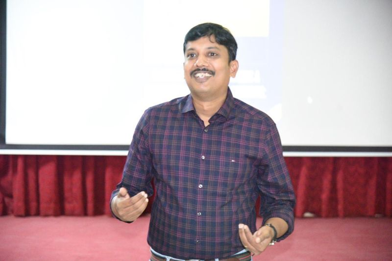
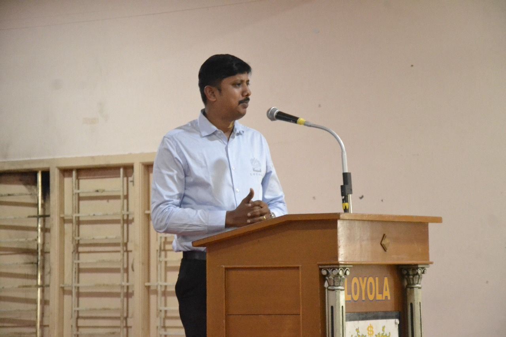
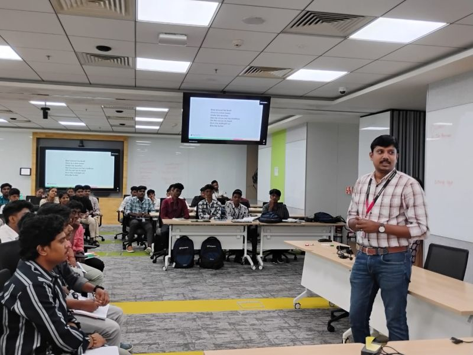

Corporate English & Communication
Accent-neutral fluency, business writing and on-camera presence — for new hires and senior teams alike.
Communication
Business English
Presentation
Corporate Communication · Soft Skills · Placement
I'm Princely Samuel — Director of Training & Placement at Loyola College, Chennai. For twelve years I've turned communication skill into careers: training teams at Infosys, Accenture and HCL, and preparing first-generation learners to walk into Goldman Sachs, McKinsey and the Big Four.

Director, Training & Placement — Loyola College, Chennai
Trained teams & placed talent at
Experience
Nine of those years as a freelance corporate English and soft-skills trainer. Two leading Learning & Development at Infosys — training teams at Infosys, Accenture, HCL and Capgemini. Today, Director of Training & Placement at Loyola College, Chennai, and a consultant trainer for ventures like Agnikul Cosmos — verbal-ability coach for GRE, TOEFL, CAT and MAT, and keynote speaker for IEEE Young Professionals.
12+
Years training
& placement
9
Years freelance
soft-skills training
120+
Recruiting
companies
60+
HR partners
via NHRD

At the Loyola College podium
About
Princely Samuel began in English literature — earning an M.Phil from The American College with his university's best-on-record score — and carried that command of language into the corporate world. Today he is Dale Carnegie– and Berlitz–certified, and teaches in both English and German.
He has keynoted for IEEE Young Professionals and spent over a decade doing one thing well: turning the way people speak into the careers they deserve.
Expertise
Four ways corporates, campuses and institutions put me to work.
Accent-neutral fluency, business writing and on-camera presence — for new hires and senior teams alike.
Behavioural training and leadership development — from first-year campus cohorts to high-growth teams at Agnikul Cosmos.
Aptitude and verbal coaching that gets candidates through the tests that gatekeep careers and admissions.
Keynotes and faculty-development programmes — including IEEE Young Professionals, Madras Section.

Impact
A degree gets you the interview. The way you speak gets you the job.
Much of Princely's work is with students who are the first in their family to enter a corporate career. Through the Maatram Foundation he places underprivileged and first-generation students into reputed companies; through the SPURS initiative at SSN, since 2017, he has equipped rural children with communication skills before their classes even begin.
Credentials
M.Phil — English Language & Literature
American College / MKU · 2012 · Best Record
M.A. — English Language & Literature
American College / MKU · 2011
B.A. — English Literature
American College / MKU · 2009
“English Curriculum Crisis in Tamil Nadu”
The English Class Room, Vol. 13 · RIE Bangalore
7 research papers (ISBN)
Teaching methodologies & literature
Contact
Corporate training, campus placement programmes, keynotes and faculty development — across Chennai and beyond, in English and German.